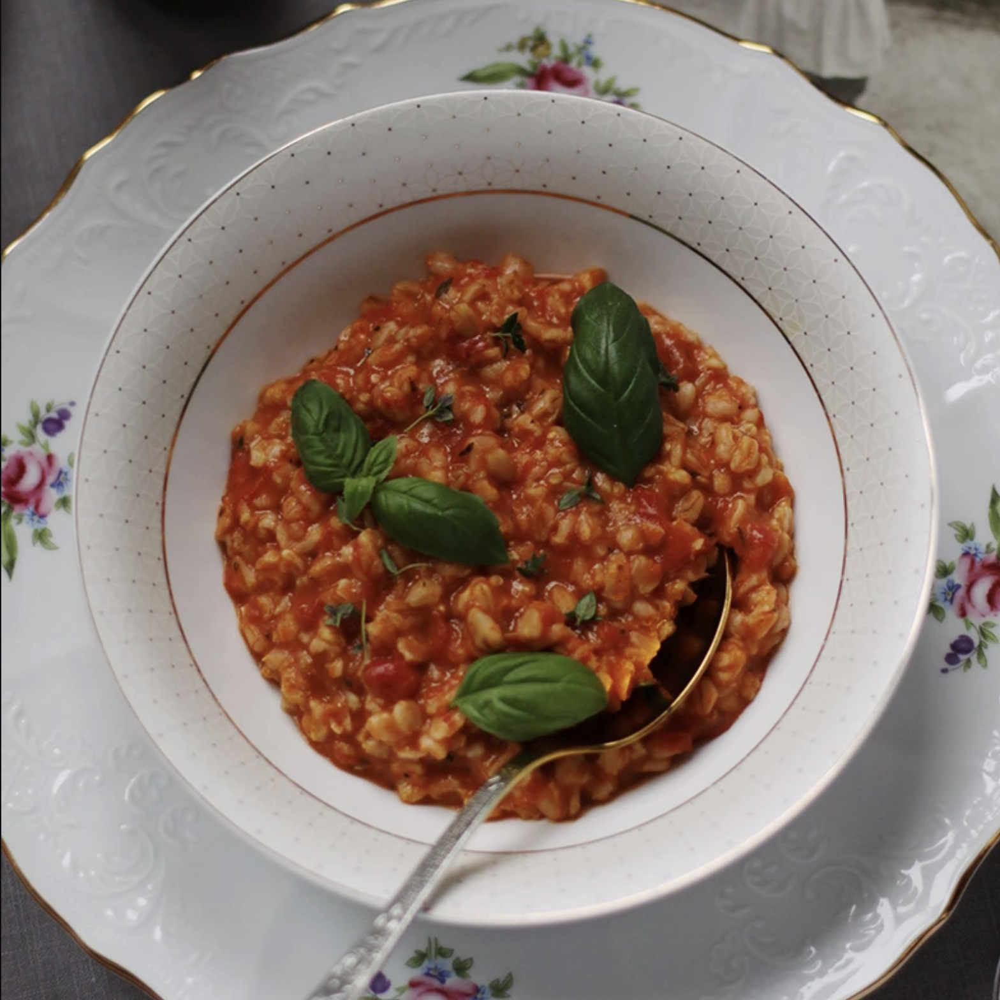

приготовление:
-
ТОМАТНАЯ
Приготовить овсянку по инструкции на упаковке. Добавить нарезанные вяленые томаты или свежие томаты, предварительно обжаренные до мягкости. Добавить любимые травы — особенно хорошо подойдут укроп или базилик. По желанию добавить сыр: натереть сверху или вмешать в овсянку.
-
ЯБЛОЧНАЯ
Приготовить овсянку по инструкции на упаковке. Яблоко или яблоки — в зависимости от количества порций — очистить от кожуры, удалить сердцевину и нарезать небольшими кубиками. Обжарить на сливочном масле с 1 ст. л. сахара до мягкости. Смешать яблоки с овсянкой, посыпать корицей и по желанию полить кленовым сиропом.